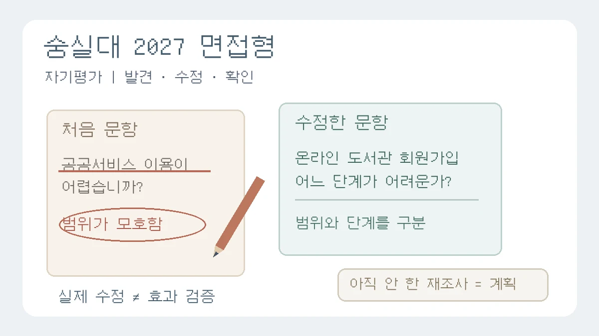

숭실대 2027 면접형, 아쉬웠다는 말 다음에 무엇을 설명할까?
숭실대 2027 SSU미래인재 면접형의 자기평가력 항목을 바탕으로 문제 발견·실제 수정·확인한 변화·남은 계획을 구분합니다. 가상 설문 문항 수정 사례와 11월 응시 확인 절차를 담았습니다.

오늘 새로 발표된 개편 뉴스가 아닙니다. 숭실대학교 2027학년도 SSU미래인재전형(면접형)의 현재 수시모집요강과 입학처 학생부종합전형 안내를 대조해, 면접에서 아쉬운 점을 말한 뒤 실제 개선 노력을 어떻게 설명할지 다룹니다.[2][3] 적용 대상은 2026년 입시 시즌의 2027학년도 지원자입니다. 2028학년도 시행계획을 올해 규칙으로 가져오지 않습니다.
“자료가 부족한 점이 아쉬웠습니다. 대학에 가면 더 깊이 탐구하겠습니다.” 이 답변은 반성과 의욕은 담았지만, 부족함을 발견한 뒤 무엇을 했는지는 말하지 않습니다. 그렇다고 면접을 앞두고 하지 않은 후속 연구를 만들어 넣을 수는 없습니다. 지금 필요한 일은 당시의 문제 발견, 실제 수정, 확인한 변화, 아직 남은 계획을 분리하는 복기입니다.
앞선 이화여대 해설은 교과 개념의 정의와 적용 조건을, 동국대 해설은 진로 변화의 학습 경로를 다뤘습니다. 이번 글은 진로를 바꾸었는지나 탐구 결과가 성공했는지가 아니라, 자기 활동을 평가한 뒤 실행한 작은 수정에 초점을 맞춥니다.
무엇이 공개돼 있나: ‘아쉬웠다’ 다음의 실행을 확인하세요
현재 모집요강 66쪽의 면접평가에는 전공적합성과 잠재력이 각각 50%로 제시돼 있습니다. 잠재력 아래 자기평가력 항목은 자신의 진로탐색을 돌아보며 개선·발전해 나가는 실행 노력을 다룹니다.[2] 입학처의 학생부종합전형 웹 안내에서도 같은 평가요소를 확인할 수 있습니다.[3] 이 안내를 바탕으로, 활동의 약점을 한 문장으로 고백하는 데서 멈추지 말고 실제 행동의 전후를 정리하자는 것이 편집팀의 제안입니다.
배점이 두 항목으로 나뉜다고 해서 답변 시간을 반씩 나누라는 뜻은 아닙니다. ‘실패를 말하면 유리하다’, ‘수정 사례가 없으면 감점이다’라는 규칙도 확인한 자료에는 없습니다. 대학이 공개한 질문 예시는 준비 방향을 이해하는 참고이지 미래 출제 보장이 아니므로, 이 글에서는 문항을 옮기지 않고 독립적인 연습 사례를 사용합니다.
누구에게 해당하나: 면접형·서류형과 모집단위를 구분하세요
- 학년도·전형: 2027학년도 SSU미래인재전형(면접형) 지원자가 대상입니다. 이름이 비슷한 SSU미래인재전형(서류형)은 서류종합평가 100% 전형으로 구분돼 있으므로 응시 절차를 혼동하지 마세요.[2]
- 선발 구조: 면접형은 1단계 서류종합평가 100%로 3~3.5배수를 선발하고, 2단계에서 1단계 성적 50%와 면접평가 50%를 합산합니다. 수능최저학력기준은 없습니다. 3배수는 인문대학 내 모집단위·국제법무학과·정보보호학과, 나머지는 3.5배수로 안내돼 있습니다.[2]
- 모집단위와 방식: 아래 연습은 모집요강 19쪽에 있는 정보사회학과 지원을 가정합니다. 면접평가는 면접위원 2인과 지원자 1인의 서류 기반 블라인드 방식이며, 1인당 12분 내외로 안내돼 있습니다.[2] 다른 대학이나 정보보호특기자전형의 운영을 이 설명으로 대신하지 마세요.
이 글의 복기 메모는 개인 연습용입니다. 모든 대학이 탐구보고서 자체를 별도 제출서류로 받는다는 뜻도, 보고서를 면접장에 가져가 보여줘도 된다는 뜻도 아닙니다. 실제 접수한 전형·모집단위와 본인에게 적용되는 수험생 안내를 먼저 확인하세요.
학생부·세특 복기: 수정 전후를 네 칸으로 정리하기
학생부에 적힌 활동 중 결과가 가장 화려한 것보다, 본인이 선택과 수정을 구체적으로 기억하는 활동 하나를 고르세요. 수업 필기, 당시 보관한 초안·수정본, 제출했던 보고서 등 본인 자료를 대조합니다. 다음은 대학의 채점표가 아니라 편집팀이 제안하는 연습용 기록 방식입니다.
- 문제 발견: 무엇이 아쉬웠는지 좁힙니다. ‘완성도가 부족했다’보다 ‘질문에 서비스의 범위가 정해져 있지 않았다’처럼 어느 문장·조건의 문제인지 적습니다. 그때 알아차렸는지, 지금 복기하다 발견했는지도 구분합니다.
- 실제 수정: 당시 바꾼 문장, 비교 기준, 자료 범위 중 하나를 적고 이유를 붙입니다. 다른 사람의 조언을 받았다면 그 조언과 본인의 판단을 나눕니다. 초안이 남아 있지 않으면 기억을 정확한 인용처럼 쓰지 않습니다.
- 확인한 변화: 수정본에서 확인할 수 있는 차이만 말합니다. 문항의 범위를 명확히 고쳤다는 사실과, 응답의 정확도가 실제로 높아졌다는 효과는 다릅니다. 다시 조사하지 않았다면 효과가 검증됐다고 말하지 않습니다.
- 남은 일: 하지 않은 검증은 계획 칸에 둡니다. 지금 새로 공부한 내용도 당시 탐구에서 수행했던 일로 소급하지 않습니다. 다음에 무엇을 어떤 기준으로 확인할지 구체화하되 완료형으로 포장하지 않습니다.
자료를 다시 찾을 때는 보고서의 참고문헌 목록만 읽지 말고, 실제 사용한 원문의 조사 대상·용어 정의·문항을 확인하세요. 학교 과제 안내와 교과서의 조사 방법 단원을 함께 펴고 자기 설문 문장과 대조하는 방식입니다. 원문을 찾지 못했다면 검색 요약으로 출처나 당시 절차를 메우지 말고 ‘원자료 재확인 필요’로 남겨 두세요.
교육용 가상 사례: ‘자료가 부족했다’를 구체적인 수정 설명으로
다음은 정보사회학과 지원자가 지역 공공서비스의 디지털 접근성을 탐구했다는 교육용 가상 상황입니다. 실제 학생부·면접 후기·조사 결과가 아니며, 실제 설문이나 검증을 실시했다는 뜻이 아닙니다. 대학 공식 기출이나 모범답안도 아닙니다.
수정 전 답변
디지털 격차를 조사했는데 자료가 부족했습니다. 더 많은 사람을 조사하면 해결할 수 있다고 생각합니다. 다음에는 표본을 늘려 더 정확한 결과를 내겠습니다.
이 답변은 ‘자료 부족’과 ‘사람 수 부족’을 바로 연결합니다. 그러나 가상 초안의 문항이 ‘공공서비스 이용이 어렵습니까?’였다면, 먼저 서비스의 종류와 이용 단계가 모호한지 살펴볼 수 있습니다. 조사 인원만 늘려도 이 모호함이 사라지는 것은 아닙니다. 이는 사례를 해석하는 편집팀의 설명이며, 실제 조사 설계의 적절성은 대상과 목적에 따라 따로 판단해야 합니다.
수정 후 답변
처음에는 자료 수만 부족하다고 생각했습니다. 초안을 다시 읽으니 제가 쓴 ‘공공서비스’가 어떤 서비스를 뜻하는지 정하지 않았다는 문제가 있었습니다. 그래서 문항의 대상을 온라인 도서관 회원가입으로 좁히고, 어려움을 느낀 단계를 따로 묻도록 수정했습니다. 다만 수정한 문항으로 재조사를 하지는 않았습니다. 따라서 문항의 범위는 명확히 했지만 응답의 정확도가 높아졌다고 확인한 것은 아닙니다. 다시 조사한다면 문항이 같은 뜻으로 이해되는지부터 점검하고 싶습니다.
이 연습의 핵심은 그럴듯한 실패담이 아니라 무엇을 바꾸었고, 그 변화로 무엇까지 말할 수 있는가입니다. 실제로 문항을 수정하지 않은 학생은 위 답변을 가져다 쓸 수 없습니다. 그 경우에는 “당시에는 바꾸지 못했고, 지금 다시 보니 이런 문제가 보인다”처럼 시점을 정확히 말한 뒤, 실제 활동 안에서 설명할 수 있는 다른 판단을 찾으세요.
꼬리질문 연습에는 “왜 인원보다 문항부터 손보았나요?”, “바뀐 문장이 해결하지 못한 문제는 무엇인가요?”, “당시 한 일과 지금 제안하는 일을 나누어 설명해 볼까요?”를 사용할 수 있습니다. 모두 편집팀의 점검 질문입니다. 답을 외우기보다 초안과 수정본에서 근거가 되는 자리를 직접 짚어 보세요.
지금 할 일: 연습 메모 한 장과 응시 확인을 분리하세요
- 오늘 남길 작은 결과물: 활동 하나에 대해 ‘발견한 문제 / 당시 고친 것 / 확인한 변화 / 아직 하지 않은 일’을 한 줄씩 씁니다. 마지막에 당시 자료가 남아 있는지 표시하세요. 네 칸이 모두 성과 문장일 필요는 없습니다.
- 모의면접: 선생님이나 친구에게 “그래서 실제로 무엇을 바꾸었나요?”를 물어 달라고 요청하고 답변을 녹음해 보세요. ‘할 것이다’를 ‘했다’로 바꾸어 말한 곳, 근거 없이 ‘효과가 좋아졌다’고 단정한 곳을 표시합니다. 학생부와 타인의 개인정보를 공개 서비스에 올리지 않습니다.
- 블라인드 점검: 요강은 지원자 성명·출신고교·수험번호 등 개인정보, 부모·친인척의 실명과 사회·경제적 지위, 대입전형자료 기재 금지사항 등을 면접에서 말하지 않도록 안내합니다.[2] 연습 답변에도 불필요한 학교명·이름을 넣지 마세요.
- 발표와 개인별 안내: 현재 요강 20쪽은 1단계 합격자 발표를 2026년 11월 23일 10:00, 면접을 11월 27일로 제시합니다. 1단계 발표 시 면접 시간·대기실·수험생 유의사항을 홈페이지에 공지하며 개별 통보하지 않는다고 명시합니다.[2] 10:00는 발표시각이지 면접 입실시각이 아닙니다.
불확실성과 다음 확인: 수정의 효과까지 만들어 말하지 마세요
확인 기준은 2026년 11월 5일 현재 모집요강 메뉴의 연결 PDF입니다. 같은 날 확인한 수시 공지 목록에서는 해당 전형의 11월 면접 수험생 유의사항을 찾지 못했습니다.[4] 요강에 적힌 11월 23일 발표·유의사항 공개 때, 그리고 고사 직전에 공식 공지와 본인 조회 결과를 다시 확인하세요. 준비물·고사장·입실 마감은 작년 후기나 공통 고사일만으로 확정하지 않습니다.
이 글의 확인일은 문서의 최초 발표일이 아닙니다. 현재 모집요강 PDF의 최초 공고일은 이번에 확인한 메뉴에서 확정하지 못했으므로 파일명으로 추정하지 않았습니다. 이후 수정 공지가 나오면 그 내용을 우선 대조해야 합니다. 공개된 평가요소만으로 특정 답변의 점수, 면접관의 의도, 합격 가능성을 단정할 수 없습니다.
활동을 돌아보는 목적은 과거를 더 멋지게 만드는 데 있지 않습니다. 이미 했던 판단을 정확히 설명하고, 하지 않은 일은 하지 않았다고 말할 수 있도록 경계를 세우는 데 있습니다. ‘작지만 실제로 한 수정’과 ‘아직 해보지 않은 좋은 계획’을 구분해 두세요.
관련 기존 가이드
- 학생부 기반 면접 준비 가이드 — 기록 전체에서 답변 근거를 고르는 기본 순서를 연결해서 보세요.
- 면접 꼬리질문 점검 가이드 — 답변 뒤에 실제 행동과 판단 이유를 물었을 때 설명이 이어지는지 확인하세요.
- 탐구보고서 처음 쓰기 가이드 — 새 보고서를 시작하는 학생은 답할 수 있는 질문과 자료 범위를 먼저 정하세요.
공식 출처와 확인 범위
수시모집요강은 책자와 PDF가 같은 쪽수인 12·19~20·22~23·66쪽을 중심으로 확인했습니다. 모집요강 메뉴의 현재 PDF, 입학처 웹 평가 안내, 수시 공지를 대조했습니다. 홈페이지의 별도 학생부종합 안내 책자는 현재 수시모집요강과 구분했고 운영 조건은 모집요강을 기준으로 삼았습니다. 공식 질문·도표·사진·PDF를 재게시하지 않았으며, 답변 연습과 일러스트는 독립적으로 작성했습니다.
이 칼럼은 운영자의 관점과 일반 교육 정보를 담고 있으며 특정 대학 합격이나 평가 결과를 보장하지 않습니다.
함께 볼 글
학생부 기반 면접 준비: 영역별 활동 복기와 꼬리질문·STAR·PREPNEW
세특·창체·공동체 활동을 동기·과정·결과·성찰로 정리하고 실제 기여와 한계를 설명하는 서류 기반 면접 연습법입니다.
학생부 기반 대입 면접 꼬리질문 점검표: 주장·근거·한계 연결하기NEW
보고서의 핵심 주장에 조건과 반대 질문을 붙여, 근거를 찾을 수 있는 답변과 아직 확인하지 못한 답변을 구분합니다.
탐구보고서 쓰는 법: 형식 6요소와 서론·본론·결론 실제 예시NEW
탐구보고서의 기본 구조 6요소와 작성 순서, 한 가지 가상 예시로 완성하는 서론·본론·결론 문장, 하루 30분씩 5일 작성 계획과 수정 기록 방법을 정리한 대표 작성 가이드입니다.